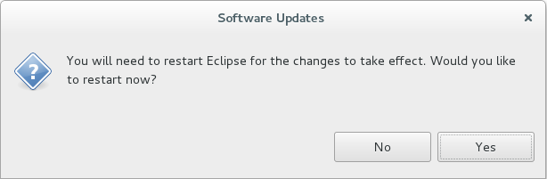

Table of Contents
Eclipse Mars 1 (4.5.1)
Linux
Se descarcă arhiva .tar.gz corespunzătoare arhitecturii mașinii pe care se dorește să se realizeze instalarea în directorul /opt:
- arhitectura pe 32 de biți
student@eim2016:~$ cd /tmp student@eim2016:/tmp$ wget http://mirrors.nic.cz/eclipse/technology/epp/downloads/release/mars/1/eclipse-java-mars-1-linux-gtk.tar.gz student@eim2016:/tmp$ cd /opt student@eim2016:/opt$ sudo tar xzvf /tmp/eclipse-java-mars-1-linux-gtk.tar.gz student@eim2016:/opt$ rm -f /tmp/eclipse-java-mars-1-linux-gtk.tar.gz
- arhitectura pe 64 de biți
student@eim2016:~$ cd /tmp student@eim2016:/tmp$ wget http://mirrors.nic.cz/eclipse/technology/epp/downloads/release/mars/1/eclipse-java-mars-1-linux-gtk-x86_64.tar.gz student@eim2016:/tmp$ cd /opt student@eim2016:/opt$ sudo tar xzvf /tmp/eclipse-java-mars-1-linux-gtk-x86_64.tar.gz student@eim2016:/opt$ rm -f /tmp/eclipse-java-mars-1-linux-gtk-x86_64.tar.gz
Lansarea în execuție a mediului de dezvoltare integrat se face prin /opt/eclipse/eclipse.
Windows
Se descarcă arhiva .zip corespunzătoare arhitecturii mașinii pe care se dorește să se realizeze instalarea:
Plugin Android Developer Tools pentru Eclipse Mars 1 (4.5.1)
- Se pornește Eclipse Mars 1 (4.5.1):
- Linux
/opt/eclipse/eclipse - Windows - se apelează executabilul
eclipse.exedin directorul în care s-a realizat instalarea
- Se instalează plugin-ul Android Developer Tools pentru Eclipse Mars 1
- Help → Install new Software
- în secțiunea Work with se completează locația https://dl-ssl.google.com/android/eclipse

- se apasă butonul Add… și în câmpul Name se specifică o denumire sugestivă (spre exemplu, Android Developer Tools); se apasă butonul OK

- se selectează Developer Tools; se apasă butonul Next

- se vor afișa detaliile pentru instalare; se apasă butonul Next

- se acceptă termenii și condițiile pentru licențierea conținutului

- se confirmă instalarea de programe care au conținut nesemnat
- se restartează Eclipse Mars 1 (4.5.1)

- se solicită specificarea căii pentru SDK-ul de Android; în cazul în care fereastra de dialog nu este afișată în mod automat, calea pentru Android SDK poate fi indicată din Window → Preferences → Android, secțiunea SDK Locations


- în bara de unele vor putea fi accesate
- Android SDK Manager - pentru gestiunea unor module / niveluri de API
- Android Virtual Device (AVD) Manager - pentru gestiunea configurațiilor de dispozitive virtuale care vor putea fi rulate în emulator pentru testarea aplicațiilor

Pentru a putea porni Android SDK Manager prin intermediul Eclipse Mars 1, este necesar să se ruleze comanda:
student@eim2016: chmod -R uga+rwx /opt/android-sdk-linux